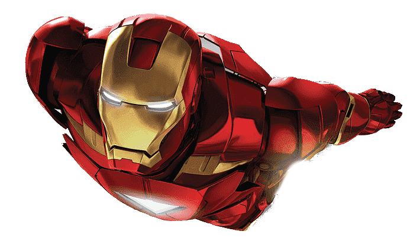

Iron Man
Tony Stark, better known as Iron Man, was a genius inventor, billionaire industrialist, and one of the founding members of the Avengers. Known for his unmatched intellect, charisma, and sometimes reckless nature, Stark was both a visionary and a warrior. Though initially driven by ego and personal gain, he evolved into a selfless protector, willing to sacrifice everything for the greater good. Beneath the armored exterior, he was a man burdened by his past mistakes, constantly striving to build a better future.
Abilities
Stark’s greatest weapon is his mind. As one of the most brilliant engineers and scientists of his time, he developed the Iron Man armor—a technologically advanced exosuit granting him superhuman strength, flight, and a vast arsenal of weapons. His suits are equipped with repulsor beams, missile systems, energy shielding, and advanced artificial intelligence, allowing him to analyze and adapt to any battle.
Backstory
Tony Stark was the heir to a powerful weapons manufacturing empire, but after a life-changing encounter in enemy territory, he abandoned arms dealing and focused on creating technology to protect rather than destroy. Using his intellect, he built the first Iron Man suit as a means of survival, later refining it into an advanced system of armor that allowed him to take on threats far beyond conventional warfare. As global dangers escalated, Stark became a key figure in assembling Earth’s greatest defenders. Over time, he transformed from a man seeking personal redemption to a hero willing to give everything for the world.
First Comic Appearance: Tales of Suspense (1959) #39